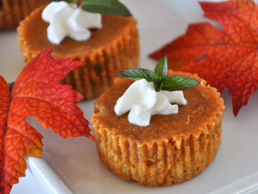

Pumpkin Pie Recipe

These delicious pumpkin pie squares are just like the pie, without having to roll out a crust. A great snack and Halloween treat.
Ingredients
- 1/2 cup butter, softened
- 1/2 cup brown sugar
- 1 cup all-purpose flour
- 1/2 cup rolled oats
- 2 eggs
- 3/4 cup white sugard
- 1 (15 ounce) can pumplin
- 1 (12 fluid ounce) can evaporated milk
- 1/2 teaspoon salt
- 1 teaspoon ground cinnamon
- 1/2 teaspoon ground ginger
- 1/4 teaspoon ground cloves
Steps
- Preheat the oven to 350 degrees F (175 degrees C)
- In a medium bowl, cream together butter and brown sugar. Mix in flour. Fold in oats. Press into a 9x13-inch baking dish.
- Bake in the preheated oven for 15 minutes, until toasted.
- In a large bowl, beat eggs with white sugar. Beat in pumpkin and evaporated milk. Mix in salt, cinnamon, ginger, and cloves. Pour over baked crust.
- Bake in the preheated oven for 20 minutes, until set. Let cool before cutting into squares.